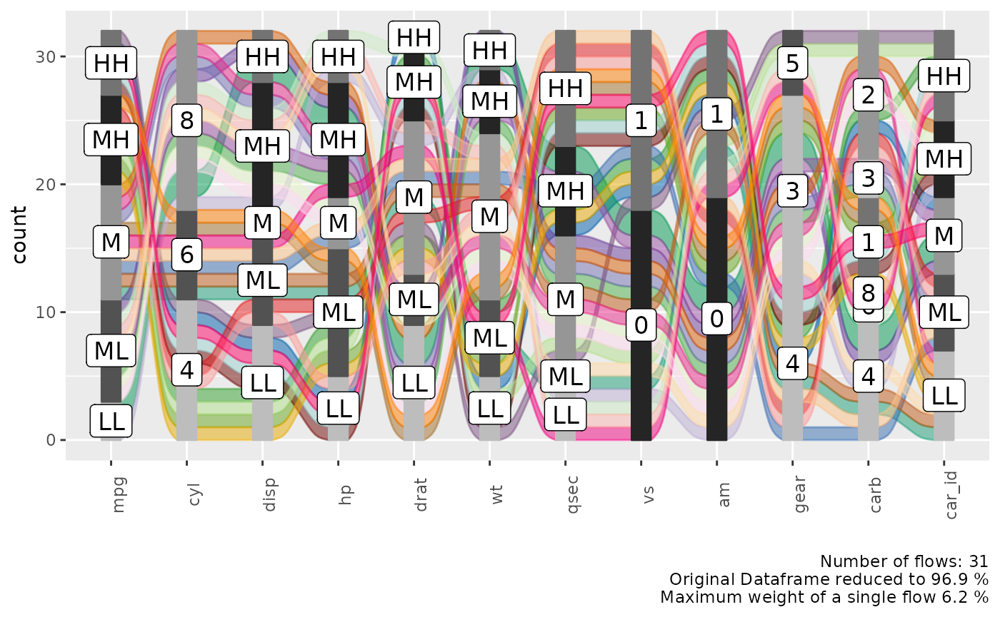
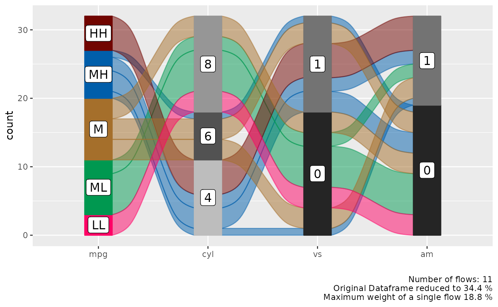
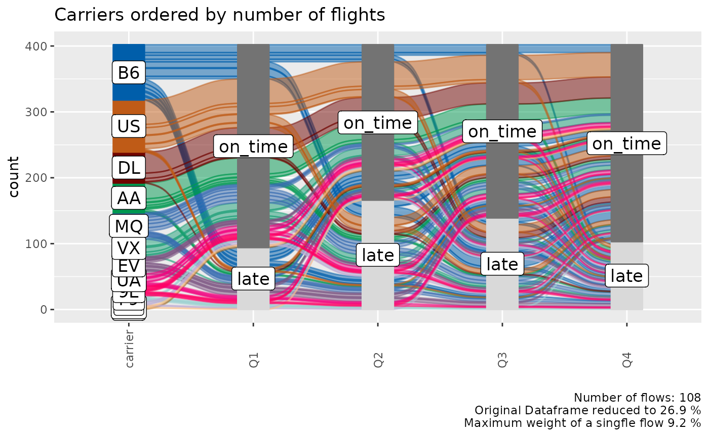
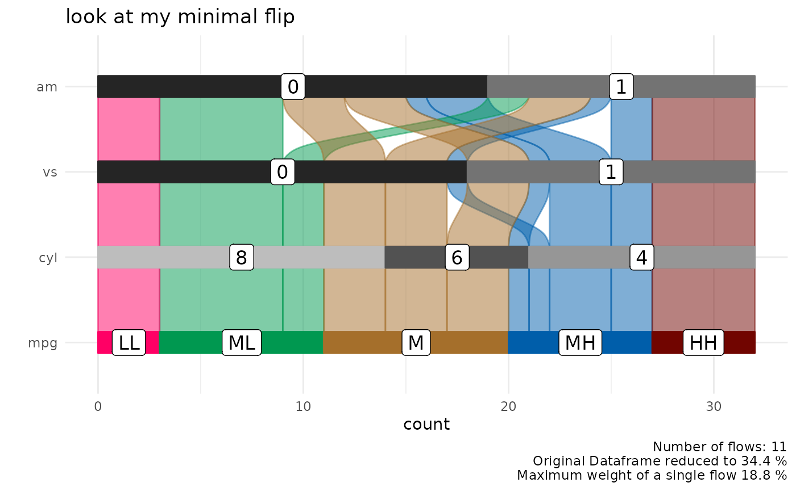

Data Exploration with Alluvial Plots
Björn Koneswarakantha
Source:vignettes/data_exploration.Rmd
data_exploration.RmdIntroduction
Alluvial plots are a form of sankey diagrams
that are a great tool for exploring categorical data. They group
categorical data into flows that can easily be traced in the diagram.
Other than sankey diagrams they are constrained to x-y dimensions,
however their graphical grammar is a bit more complex then that of a
regular x-y plot. The ggalluvial
package made a great job of translating that grammar into ggplot2 syntax
and gives you many option to tweak the appearance of a plot,
nevertheless there still remains a multilayered complexity that makes it
difficult to use ggalluvial for explorative data analysis.
easyalluvial provides a simple interface to this package
that allows you to put out a decent alluvial from any dataframe where
data is stored in either long or wide format while automatically binning
continuous data. It is meant to allow a quick visualisation of entire
dataframes similar to the visualisations created by the tabplot
package providing different colouring options which give it the
flexibility needed for data exploration.
Wide Format
Sample data
suppressPackageStartupMessages( require(easyalluvial) )
suppressPackageStartupMessages( require(tibble) )
suppressPackageStartupMessages( require(dplyr) )
suppressPackageStartupMessages( require(ggplot2) )
suppressPackageStartupMessages( require(forcats) )
suppressPackageStartupMessages( require(purrr) )
data_wide = as_tibble(mtcars)
categoricals = c('cyl', 'vs', 'am', 'gear', 'carb')
numericals = c('mpg', 'cyl', 'disp', 'hp', 'drat', 'wt', 'qsec')
data_wide = data_wide %>%
mutate_at( vars(categoricals), as.factor ) %>%
mutate( car_id = row_number() )
knitr::kable( head(data_wide) )| mpg | cyl | disp | hp | drat | wt | qsec | vs | am | gear | carb | car_id |
|---|---|---|---|---|---|---|---|---|---|---|---|
| 21.0 | 6 | 160 | 110 | 3.90 | 2.620 | 16.46 | 0 | 1 | 4 | 4 | 1 |
| 21.0 | 6 | 160 | 110 | 3.90 | 2.875 | 17.02 | 0 | 1 | 4 | 4 | 2 |
| 22.8 | 4 | 108 | 93 | 3.85 | 2.320 | 18.61 | 1 | 1 | 4 | 1 | 3 |
| 21.4 | 6 | 258 | 110 | 3.08 | 3.215 | 19.44 | 1 | 0 | 3 | 1 | 4 |
| 18.7 | 8 | 360 | 175 | 3.15 | 3.440 | 17.02 | 0 | 0 | 3 | 2 | 5 |
| 18.1 | 6 | 225 | 105 | 2.76 | 3.460 | 20.22 | 1 | 0 | 3 | 1 | 6 |
alluvial_wide()
Binning of Numerical Variables
This function produces a simple alluvial plot of the given dataframe.
Numerical variables are centered, scaled and yeo johnson transformed
(transformed to resemble more of a normal distribution) by
easyalluvial::manip_bin_numerics(). Outliers as defined by
the boxplot criteria ( see documentation for
grDevices::boxplot.stats()) are stunted to to the min and
max values that are defined by the whiskers of the box plot. The so
transformed numeric variables are then cut into 5 (default) equally
ranged bins which are labeled ‘LL’ (low-low), ‘ML’ (medium-low), ‘M’
(medium), ‘MH’ (medium-high), HH (high-high) by default.
alluvial_wide(data_wide
, bins = 5 # Default
, bin_labels = c('LL','ML','M','MH','HH') # Default
, fill_by = 'all_flows'
)
Alluvial Plot Organisation
Each group of stacked bars represents a variable while the size of each segment represents how many observations in the dataframe belong to that level matching the segment label. The colored flows between the bar stack represent a group of observations that match the value for each variable indicated by the flow. The thickness of the flow indicates how many observations belong to that group.
We see that each flow has more or less the same thickness and the statistical information in the plot caption tells us that we have 30 flows in total for 32 observations in the dataframe. Which means that almost each observation is unique in its combination of variable values.
Reduce the Number of Variables
In order to reduce the complexity we can use a helper function
plot_condensation() to get an idea which variables we want
to include in our alluvial plot. Lets say we are especially interested
in the mpg (miles per gallon) variable and how it relates
to the other variables. plot_condensation will look for
other variables it can combine mpg with while trying to
condense the data frame to a minimum.
plot_condensation(data_wide, first = mpg)
In general we want to condense the dataframe to 50% or less we might
get a meaningful alluvial when looking at mpg, cyl, vs, am
in that order.
alluvial_wide( select(data_wide, mpg, cyl, vs, am), fill_by = 'first_variable' )
Reorder Levels
We can see a clear pattern in the flows now, especially now that we
have colored the flows by the mpg variable. However some of
the flows are unnecessarily criss-crossing. We can improve this by
changing the order of the levels of the cyl variable.
alluvial_wide( select(data_wide, mpg, cyl, vs, am)
, fill_by = 'first_variable'
, order_levels = c('8','6','4') )If levels of several variables have levels of the same name we cannot
order them individually per variable, this is a design choice (see
documentation of alluvial_wide() ). If we want to reorder
them we need to assign individual level names first.
p_unordered = alluvial_wide( select(data_wide, mpg, disp, hp)
, fill_by = 'first_variable' ) +
labs( title = 'Unordered', caption = '\n\n' )
bin_labels = c('mpg_LL','mpg_LM','mpg_M','mpg_MH','mpg_HH')
p_ordered = data_wide %>%
mutate( mpg = manip_bin_numerics(mpg, bin_labels = bin_labels)
, mpg = fct_rev(mpg) ) %>%
select( mpg, disp, hp) %>%
alluvial_wide() +
labs( title = 'Ordered')
gridExtra::grid.arrange( p_unordered, p_ordered, nrow = 1 )Long Format
In certain cases we might want to start with a dataframe that is already in long format, this is mostly the case for time-series data where we want to track a categorical value over different time periods.
Sample Data
monthly_flights = nycflights13::flights %>%
group_by(month, tailnum, origin, dest, carrier) %>%
summarise() %>%
group_by( tailnum, origin, dest, carrier) %>%
count() %>%
filter( n == 12 ) %>%
select( - n ) %>%
left_join( nycflights13::flights ) %>%
.[complete.cases(.), ] %>%
ungroup() %>%
mutate( flight_id = pmap_chr(list(tailnum, origin, dest, carrier), paste )
, qu = cut(month, 4)) %>%
group_by(flight_id, carrier, origin, dest, qu ) %>%
summarise( mean_arr_delay = mean(arr_delay) ) %>%
ungroup() %>%
mutate( mean_arr_delay = ifelse( mean_arr_delay < 10, 'on_time', 'late' ) )## `summarise()` has grouped output by 'month', 'tailnum', 'origin', 'dest'. You
## can override using the `.groups` argument.
## Joining with `by = join_by(tailnum, origin, dest, carrier)`
## `summarise()` has grouped output by 'flight_id', 'carrier', 'origin', 'dest'.
## You can override using the `.groups` argument.
levels(monthly_flights$qu) = c('Q1', 'Q2', 'Q3', 'Q4')
data_long = monthly_flights
knitr::kable( head( data_long) )| flight_id | carrier | origin | dest | qu | mean_arr_delay |
|---|---|---|---|---|---|
| N0EGMQ LGA BNA MQ | MQ | LGA | BNA | Q1 | on_time |
| N0EGMQ LGA BNA MQ | MQ | LGA | BNA | Q2 | on_time |
| N0EGMQ LGA BNA MQ | MQ | LGA | BNA | Q3 | on_time |
| N0EGMQ LGA BNA MQ | MQ | LGA | BNA | Q4 | on_time |
| N11150 EWR MCI EV | EV | EWR | MCI | Q1 | late |
| N11150 EWR MCI EV | EV | EWR | MCI | Q2 | late |
alluvial_long()
In long format we only need the column that contains the keys
(timepoints, Q1, Q2, Q3, Q4) and the values (late, ontime), but we also
need a column for the ID (flight_id) because in long format data for one
flight is spread over 4 rows and the function needs to know which IDs to
group to put into a flow. If there is implicitly missing data so one
flight_id has less than in this case four rows of data (one for each
timepoint) it will be made explicit and labeled 'NA'.
col_vector = c('tomato', 'green3')
alluvial_long(data_long
, key = qu
, value = mean_arr_delay
, id = flight_id
, fill_by = 'value'
, col_vector_flow = col_vector
, col_vector_value = col_vector
)
We might be more interested which airline carrier had the most late flights, we can add it as an additional variable to the plot and use it for coloring. We can place this variable either on the left or on the right.
p_right = alluvial_long(data_long
, key = qu
, value = mean_arr_delay
, id = flight_id
, fill = carrier
, fill_by = 'last_variable'
, fill_right = T # Default
) +
labs(title = 'Color fill variable placed to the right')
p_left = alluvial_long(data_long
, key = qu
, value = mean_arr_delay
, id = flight_id
, fill = carrier
, fill_by = 'last_variable'
, fill_right = F
) +
labs(title = 'Color fill variable placed to the left'
, caption = '\n\n')
gridExtra::grid.arrange( p_left, p_right, nrow = 1)
Order Levels
alluvial_long() takes three different
order_levels_* arguments, one for the keys (x-axis) one for
the values (y-axis) and one for the fill variable. Here we want to
demonstrate how to order the carrier variable by number of
flights.
carriers_ordered_by_count = data_long %>%
group_by(carrier) %>%
count() %>%
arrange( n ) %>%
.[['carrier']]
alluvial_long(data_long
, key = qu
, value = mean_arr_delay
, id = flight_id
, fill = carrier
, fill_by = 'last_variable'
, order_levels_fill = carriers_ordered_by_count
, fill_right = F
) +
labs(title = 'Carriers ordered by number of flights')
General
Missing Data
Explicitly and implicitly missing data will automatically be labeled
as 'NA' and added as a level. The order of that level can
be changed like any other. We will automatically generate implicitly
missing data if we sample only a fraction of our long format dataframe,
because then not every flight_id will have a value (late, on_time)
assigned for each time point (Q1, Q2, Q3, Q4). We can replace
'NA' with any other string.
col_vector = c( 'tomato', 'grey', 'green3')
data_na = data_long %>%
select(flight_id, qu, mean_arr_delay) %>%
sample_frac(0.9)
alluvial_long(data_na
, key = qu
, value = mean_arr_delay
, id = flight_id
, fill_by = 'value'
, NA_label = 'None'
, col_vector_value = col_vector
, col_vector_flow = col_vector
) +
labs(title = 'Implicit NA values')
Colors
alluvial_wide() and alluvial_long take any
sequence of either HEX code or string color values.
easyalluvial offers some convenience functions around
constructing qualitative color palettes for distinct values.
palette_qualitative() %>%
palette_filter(greys = F) %>%
palette_plot_rgp()Connect Flows to observations in original data
We might recognise interesting patterns in the alluvial plot that we
want to follow up upon. For example which cars With medium-low
mpg and 8 cyl and 0 vs has an
am value of 1. Note that we are passing the
car_id variable.
p = alluvial_wide( select(data_wide, mpg, cyl, vs, am, car_id)
, id = car_id
, fill_by = 'first_variable'
, order_levels = c('8','6','4') )
p
The plot objects returned by both functions have an attribute called
data_key which is an x-y table arranged like the alluvial
plot one column containing the original ID. We can use the
car_id variable to rejoin the original dataframe.
attr(p, "data_key") %>%
filter( mpg == 'ML'
, cyl == 8
, vs == 0
, am == 1 ) %>%
# in order to convert factors to integers we have to convert them
# to character first. Converting from factor returns the order of
# the factor instead.
mutate( car_id = as.character(car_id)
, car_id = as.integer(car_id) ) %>%
left_join(data_wide, by = 'car_id') %>%
knitr::kable()| car_id | mpg.x | cyl.x | vs.x | am.x | alluvial_id | n | mpg.y | cyl.y | disp | hp | drat | wt | qsec | vs.y | am.y | gear | carb |
|---|---|---|---|---|---|---|---|---|---|---|---|---|---|---|---|---|---|
| 29 | ML | 8 | 0 | 1 | 11 | 2 | 15.8 | 8 | 351 | 264 | 4.22 | 3.17 | 14.5 | 0 | 1 | 5 | 4 |
| 31 | ML | 8 | 0 | 1 | 11 | 2 | 15.0 | 8 | 301 | 335 | 3.54 | 3.57 | 14.6 | 0 | 1 | 5 | 8 |
ggplot2 manipulations
thanks to ggalluvial the alluvial plots that
easyalluvial returns can be manipulated using
ggplot2 syntax
p +
coord_flip() +
theme_minimal() +
ggtitle('look at my minimal flip')